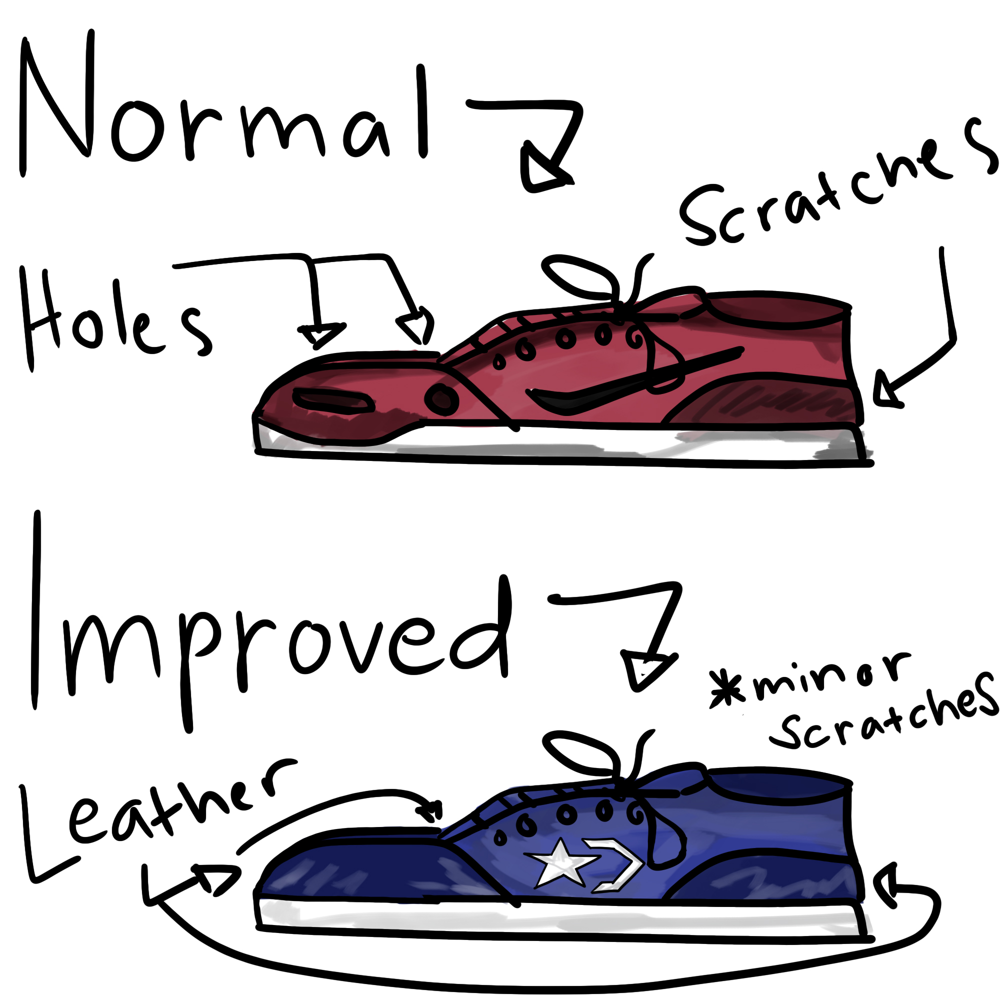

Leather Stitched Skate Shoes
If you see a skateboarder you can observe them with wrecked shoes, like they have holes and scratches that
make the shoes ugly but that isn't the case with skaters. As long as the shoes is skateable, it works! But what
I want is that the shoes be more durable in terms of the hole problem of the shoes when skating in them.
Now, there have been shoes that is enforced with a "toecap" to help the hole problem but I have never seen a skate shoe
that is enforced with leather with the whole front of the shoe.
